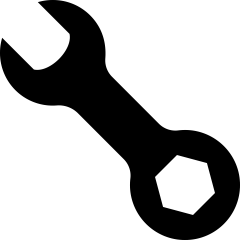
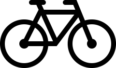

Wykształcenie
od 2019: Technikum Łączności nr 14 w Krakowie, profil: Technik Informatyk.
Moje dane
Julian Dworzycki
14-02-2005
Krzywaczka 850
730 778 371
julian.dworzycki@gmail.com
Doświadczenie
- Obróbka zdjęć w programie Photoshop lub Gimp,
- Edycja plików dźwiękowych w programie Audacity,
- Składanie komputerów stacjonarnych oraz ich konfiguracja/naprawa,
- Umiejętność lutowania, zarabiania kabli RJ45,
- Montaż sieci i urządzeń teleinformatycznych,
- Języki i narzędzia programowania: HTML, CSS, C++, Java, JavaScript, Asembler,
- Tworzenie statycznych stron internetowych,
- Tworzenie oraz administracja serwerów DNS, DHCP, FTP, Samba,
- Tworzenie baz danych,
- Obsługa programów: MS Office Excel/Word/PowerPoint/Access, Photoshop, Gimp, Audacity.
- Obsługa systemów operacyjnych: Windows 7/10/11, Windows Server 2008/12/16, Linux, Linux server.
Umiejętności
- Język angielski - dobry (komunikatywny),
- Język niemiecki - podstawowy,
- Zdolność do współpracy i kierowania zespołem,
- Radzenie sobie ze stresem,
- Umiejętność skutecznego komunikowania się.
Zainteresowania
|
Gry komputerowe |

Majsterkowanie |
|
Nowinki technologiczne |

Kolarstwo |
Niniejszym oświadczam, że wyrażam zgodę na przetwarzanie moich danych osobowych w celu przeprowadzenia procesu rekrutacji (zgodnie z ustawą z dnia 29.08.1997r. o ochronie danych osobowych Dz. U. Nr 133, poz. 883).